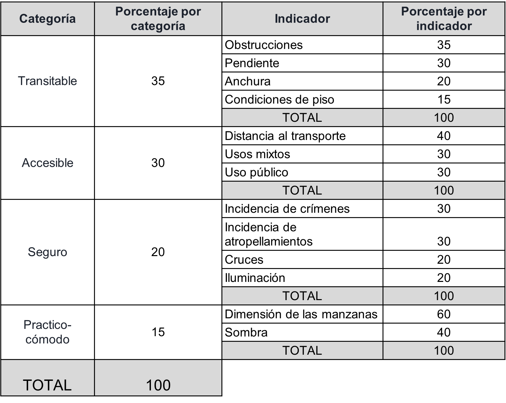

Sobre nuestro proyecto
Este proyecto evalúa la caminabilidad de las vías públicas en la colonia Lomas de Padierna, ubicada al sur de la Ciudad de México, mediante la adaptación de un índice de caminabilidad para zonas de uso residencial.
Nuestros objetivos:
- Identificar tramos con condiciones desfavorables para el tránsito peatonal.
- Ofrecer una plataforma donde visualizar factores relevantes para la caminabilidad.
Delimitación del área de estudio, Fuente: elaboración propia
Existen 6 requisitos clave que deben asegurarse para que un espacio sea caminable, que acomodados según su orden de prioridad son:
- Transitable: El entorno urbano vuelve físicamente posible caminar de un lugar a otro.
- Accesible: El entorno urbano incluye destinos que se encuentran a una distancia razonable a pie.
- Seguro: El entorno urbano protege a las personas que caminan.
- Práctico: El entorno urbano prioriza la caminata minimizando el tiempo de traslado.
- Cómodo: El ambiente minimiza molestias físicas como aglomeraciones, lluvia o sol.
- Agradable: El ambiente proporciona alegría al caminar con arte y entretenimiento.
Pirámide de requisitos para la caminabilidad, Fuente: ITDP, 2018
Por otro lado, existen tres factores principales de planificación urbana que influyen en la caminabilidad:
Infraestructura: Características del sistema de transporte público como banquetas, cruces y semáforos.
Actividad: Características de la forma urbana que determinan la ubicación de personas y destinos.
Prioridad: Aspectos que dan preferencia a modos sustentables sobre el uso de automóviles particulares. (ITDP, 2018)
Conceptos clave en el estudio de la caminabilidad:
Movilidad Peatonal
Incluye a todas las personas que se desplazan por la vía pública a pie o mediante ayudas técnicas como bastones, andaderas o sillas de ruedas.
Ley General de Movilidad y Seguridad VialAccesibilidad
Posibilidad de acceder en igualdad, dignidad y autonomía al entorno construido y los servicios que ofrece, eliminando barreras físicas y culturales.
NOM-004-SEDATU-2023Vía Pública
Espacio de uso común destinado al tránsito de personas y vehículos, así como a servicios públicos e infraestructura urbana.
NOM-004-SEDATU-2023Seguridad Vial
Políticas y medidas para prevenir siniestros de tránsito y reducir sus consecuencias, con un enfoque sistémico.
NOM-004-SEDATU-2023Metodología:
El índice de caminabilidad para Lomas de Padierna se inspiró en la metodología desarrollada por el Instituto Municipal de Planeación (IMPLAN) de Valle de Santiago, Guanajuato. Sin embargo, se realizaron adaptaciones sustanciales para responder a las particularidades físicas, urbanas y sociales del área de estudio, por esto se adoptó un enfoque mixto que combina trabajo de campo, análisis espacial y procesamiento de información cuantitativa y cualitativa, resultando una estructura de cuatro categorías, con diferentes ponderaciones como se muestra en la tabla.
Tabla de categorías, variables y sus respectivas ponderaciones.